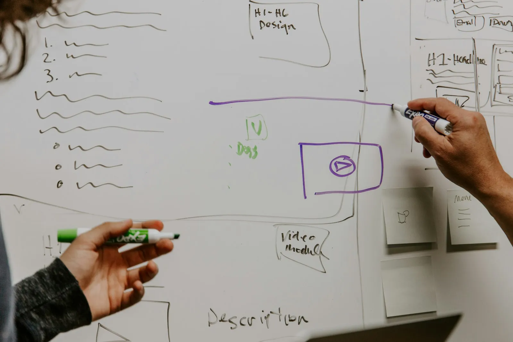
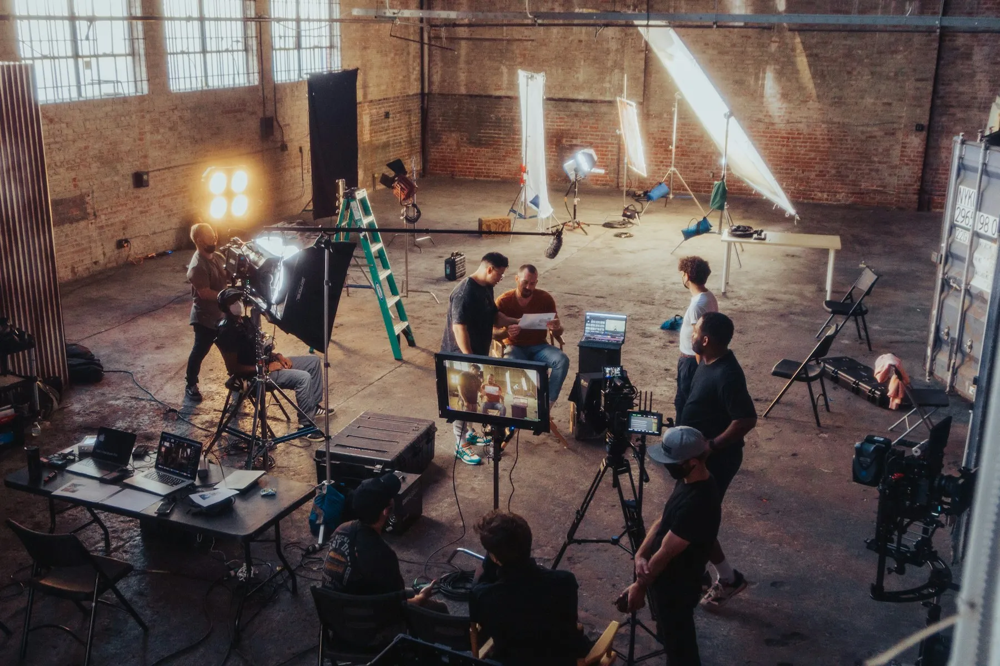
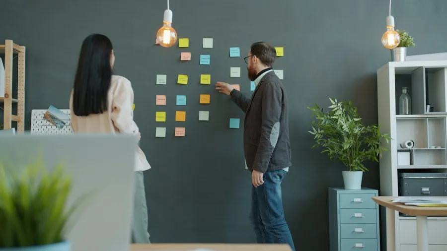
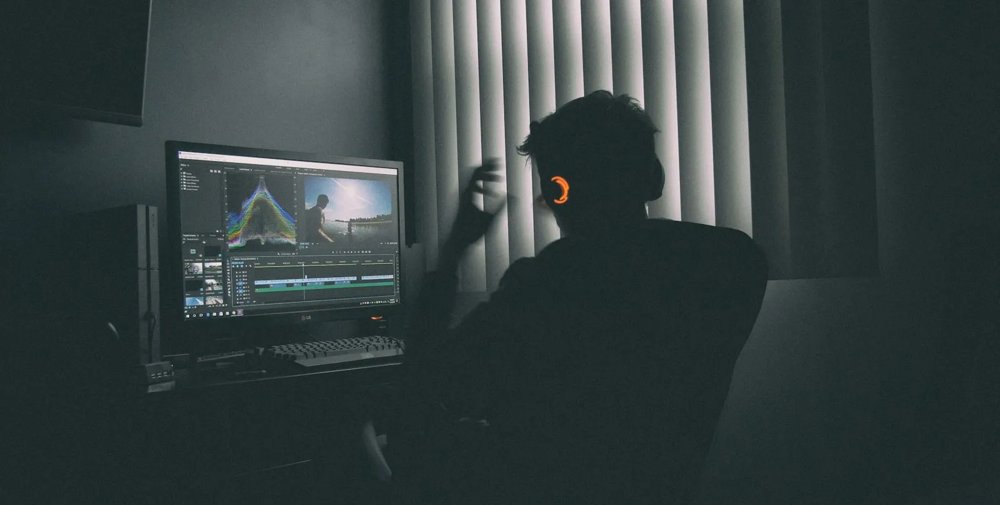
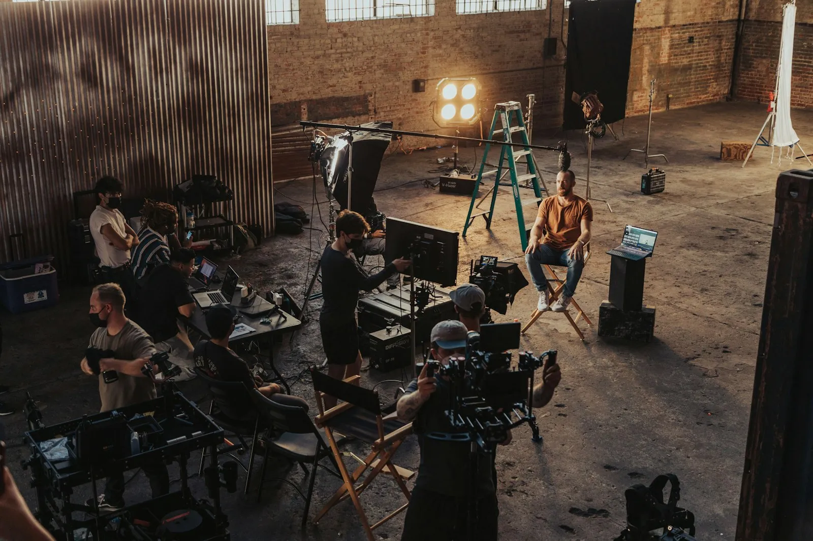
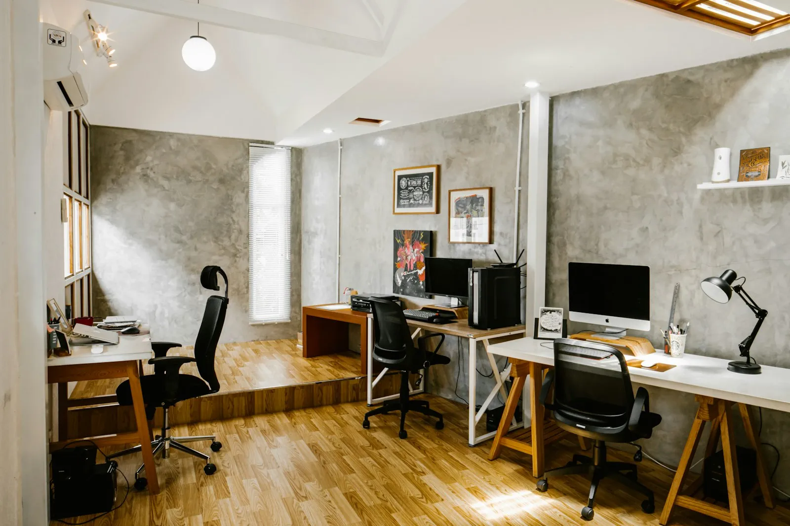

01PLANNING & PRODUCE
企画・プロデュース
お店や商品、まちの魅力を「何を・誰に・どう伝えるか」から一緒に整理し、企画書の形にします。
福岡のテレビ番組づくりの現場で培った構成の力を活かし、見る人の心に残る流れを組み立てます。
地元の方のキャスティングや撮影場所の手配など、制作に入るまでの段取りもまとめてお受けします。
博多から、地域に寄り添う企画・映像・ラジオの会社
株式会社Freakは、博多で生まれた企画・制作のチームです。
まちのお店や会社の取り組みに寄り添い、企画から映像・ラジオ番組の制作、届けるためのプロモーションまでを一つのチームで担います。
福岡・博多を拠点に、九州を中心として全国へ出向いてお手伝いします。


SCENE 01About
私たちについて
地域の可能性を、
人と企業のつながりからカタチにする。
どのまちにも、まだ知られていない良い商品やお店、人、取り組みがあります。
けれど、知られなければ選ばれません。
Freakは、その土地に足を運び、話を聞くところから始めます。
お客さまの想いを一緒に整理し、映像やラジオにして、見てほしい人・聴いてほしい人に届くまでを一つの流れで考えます。
博多で生まれた小さなチームだからこそ、担当者が最初から最後まで、顔の見える距離で動きます。

SCENE 02Service
事業内容
地域のお店・会社・自治体・団体のみなさまのお手伝いをします。
企画だけ、映像だけ、ラジオだけのご相談もお受けしています。

01PLANNING & PRODUCE
お店や商品、まちの魅力を「何を・誰に・どう伝えるか」から一緒に整理し、企画書の形にします。
福岡のテレビ番組づくりの現場で培った構成の力を活かし、見る人の心に残る流れを組み立てます。
地元の方のキャスティングや撮影場所の手配など、制作に入るまでの段取りもまとめてお受けします。

02VIDEO PRODUCTION
お店や会社の紹介、観光・まちの PR、採用、SNS 向けの短い動画まで。
福岡のテレビ局の制作現場で経験を積んだスタッフが、撮影から編集・字幕・音までを社内で担当します。
放送の現場で身につけた段取りと仕上げの基準で、用途に合わせた長さと形で納めます。
03RADIO PROGRAM
番組の企画・構成から、収録・編集、出演者の手配までを担当します。
地域の放送局からネット配信まで、まちの声を聴いてほしい人に届く番組をつくります。
進行中のプロジェクト
04PROMOTION
つくった映像や番組を、地元にも、その外にも届けるところまで。
SNS での発信の設計、広告の出し方、公開後の数字の振り返りまでを一緒に行います。
RADIO ― JOINT PROJECT
株式会社Freakは、ラジオ番組を AlnacE と共同で手がけています。
01
株式会社Freak
代表取締役坂 奎太朗
KEITARO SAKA
02
AlnacE
代表大石 萌衣
MOE OISHI
SCENE 03Process
進め方
どの段階でも、担当者が直接ご連絡します。
必要に応じて現地にうかがい、遠方の方とはオンラインでの打ち合わせも組み合わせます。
目的・届けたい相手・地域の特徴・ご予算・時期をうかがいます。
伝え方の案と、制作の内容・金額・日程をご提案します。
撮影・収録・編集を行い、確認をいただきながら仕上げます。
公開の手順と、見られ方の振り返りまで伴走します。
SCENE 04Company
会社情報
福岡・博多を拠点に、九州を中心として全国で活動しています。

SCENE 05Contact
企画の段階でも、まだ形になっていないご相談でも大丈夫です。
まちのこと、お店のこと、地域の取り組みのこと。
遠方からのご相談も歓迎しています。
お電話、またはフォームからお気軽にお問い合わせください。
FORM
フォームでのお問い合わせ
ご用件に近い方のボタンを押すと、入力フォームが開きます。